Chap 7: Relational Database Design
约 3216 个字 24 张图片 预计阅读时间 32 分钟
Relational Database Design
Introduction
Example
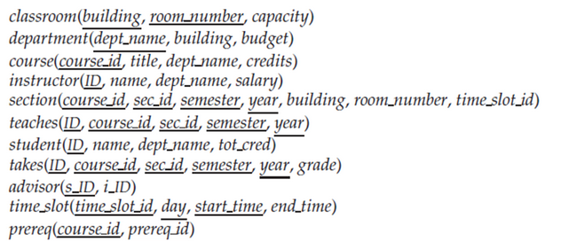
What about combining instructor and department?
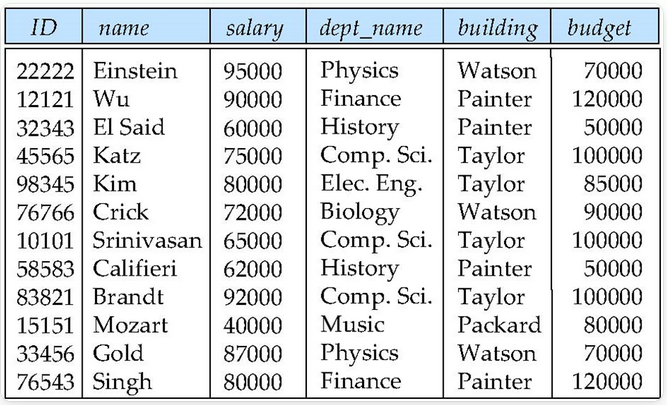
Pitfalls of the "bad" relations
- Information repetition ( 信息重复 )
- Insertion anomalies ( 插入异常 )
- Update difficulty ( 更新困难 )
数据之间存在着隐含的函数约束关系，知道了 id 就可以决定其他元素。 e.g. id \(\rightarrow\) name, salary, dept_name; dept_name \(\rightarrow\) building, budget
产生冗余的原因是 dept_name 决定了部分属性，但他却不是这个表的 primary key.
好的关系：只有 candidate key 能决定其他属性。
拆表后要有重叠的属性，否则无法拼接回去。这里的公共属性必须是分拆出一个关系模式的 primary key, 这是无损（没有信息损失）连接。
lossy decomposition
employee(ID, name, street, city, salary) \(\rightarrow\) employee1 (ID, name) and employee2 (name, street, city, salary)
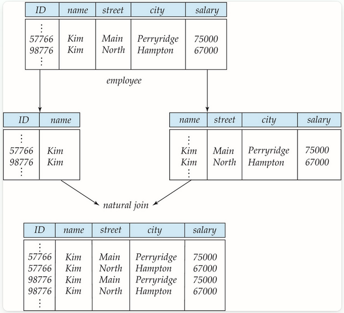
Example of Lossless-Join Decomposition
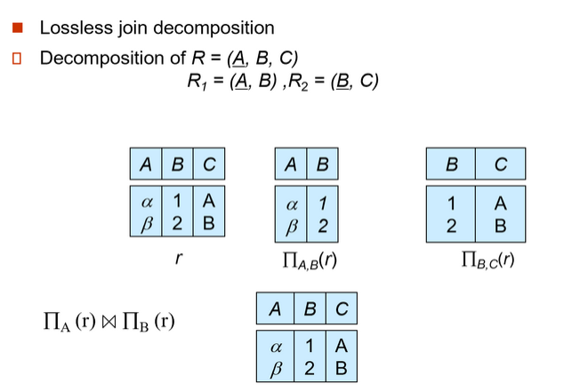
Lossless-join Decomposition
Let \(R\) be a relation schema and let \(R_1\) and \(R_2\) form a decomposition of \(R\). That is \(R = R_1 \cup R_2\).
We say that the decomposition is a lossless decomposition if there is no loss of information by replacing R with the two relation schemas \(R = R_1 \cup R_2\). Formally, \(r = \prod_{R_1}(r) \bowtie \prod_{R_2}(r)\).
And, conversely a decomposition is lossy if \(r\subset \prod_{R_1}(r) \bowtie \prod_{R_2}(r)\)
Note: more tuples implies more uncertainty (less information).
判断二元关系模式是否为无损连接
通常情况下，题目碰到的多为判断拆分成二元关系模式是否为无损链接。
下面给出判断无损连接的充要条件
判断多元关系模式是否为无损连接
判断多元关系模式是否为无损连接常用表格法，可以参考下面的视频讲解：数据库判断分解的无损连接性
Devise a Theory for the Following
- Decide whether a particular relation R is in "good" form.
- In the case that a relation R is not in "good" form, decompose it into a set of relations \(\{R_1, R_2, \ldots, R_n\}\) such that
- each relation is in good form
- the decomposition is a lossless-join decomposition
如果关系是不好的，我们希望把它无损分解成好的关系。
- Our theory is based on:
- functional dependencies
- multivalued dependencies
- Normal Forms(NF): \(1NF \rightarrow 2NF \rightarrow 3NF \rightarrow **BCNF** \rightarrow 4NF\)
有些函数依赖，不能在 BCNF 中得到体现，需要把几个表拼在一起才能体现，叫依赖保持。这时我们需要从 BCNF 回到 3NF.
Functional Dependencies
Functional Dependencies are constraints on the set of legal relations. ( 来自于应用层面的规定 )
Require that the value for a certain set of attributes determines uniquely the value for another set of attributes. e.g. dept_name \(\rightarrow\) building
A functional dependency is a generalization of the notion of a key.
Let \(R\) be a relation schema \(\alpha\subseteq R\) and \(\beta\subseteq R\) (\(\alpha, \beta\) 是属性的集合 ) The functional dependency \(\alpha\rightarrow \beta\) holds on \(R\) if and only if for any legal relations \(r(R)\), whenever any two tuples \(t_1\) and \(t_2\) of \(r\) agree on the attributes \(\alpha\), they also agree on the attributes \(\beta\). That is,
通过数据库实例可以证伪函数依赖，但不能证实
Example
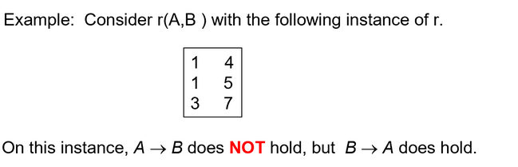
\(A\rightarrow B\) 可以证伪，但也不能因此就说 \(B\rightarrow A\)
- K is a superkey for relation schema \(R\) if and only if \(K\rightarrow R\)
- K is a candidate key for \(R\) if and only if
- \(K\rightarrow R\), and
- for no \(\alpha\subset K\), \(\alpha\rightarrow R\)
超键为什么一定是函数依赖
由 superkey 的定义出发，对任意关系实例而言，不存在两个不同的元组，它们的 superkey 相同。
因此，对于：
而其实，根本就不存在 \(t_1[\alpha] = t_2[\alpha]\) 的情况。
回顾离散数学中的逻辑等价关系 \(P \rightarrow Q \equiv \neg P \lor Q\)，因此当 \(t_1[\alpha] = t_2[\alpha]\) 不成立时，命题依然成立。
A functional dependency is trivial if it is satisfied by all relations.
全集可以决定子集。
In general, \(\alpha\rightarrow \beta\) is trivial if \(\beta\subseteq \alpha\)
也就是说这种函数依赖是 trival 的，不传递什么有效的信息，所以需要特别的把它定义出来以和其他函数依赖做区别
Closure( 闭包 )
Closure of a Set of Functional Dependencies
Given a set \(F\) of functional dependencies, there are certain other functional dependencies that are logically implied by \(F\).
The set of all functional dependencies logically implied by \(F\) is the closure of \(F\). We denote the closure of \(F\) by \(F^+\).
e.g. \(F=\{A\rightarrow B,B\rightarrow C\}\) then \(F^+=\{A\rightarrow B, B\rightarrow C, A\rightarrow C, AB\rightarrow B, AB\rightarrow C,\ldots\}\)
\(F\rightarrow \ F^+\) 的这个过程是交给计算机来实现的
We can find \(F^+\), the closure of \(F\), by repeatedly applying Armstrong's Axioms:
- if \(\beta\subseteq \alpha\) then \(\alpha \rightarrow \beta\) (reflexivity, 自反律 )
- if \(\alpha\rightarrow \beta\) then \(\gamma \alpha \rightarrow \gamma \beta\) (augmentation, 增补律 )
- if \(\alpha\rightarrow \beta\) and \(\beta \rightarrow \gamma\) then \(\alpha\rightarrow \gamma\) (transitivity, 传递律 )
These rules are
- Sound（正确有效的） generate only functional dependencies that actually hold
- Complete（完备的） generate all functional dependencies that hold
Example
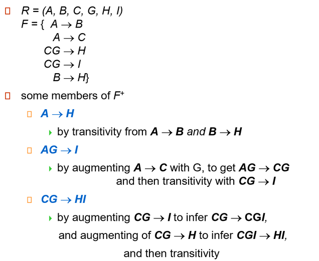
Additional rules:
- If \(\alpha\rightarrow \beta\) holds and \(\alpha\rightarrow \gamma\) holds, then \(\alpha\rightarrow \beta\gamma\) holds (union, 合并 )
- If \(\alpha\rightarrow \beta\gamma\) holds, then \(\alpha\rightarrow \beta\) holds and \(\alpha\rightarrow \gamma\) holds (decomposition, 分解 )
- If \(\alpha\rightarrow \beta\) holds and \(\gamma \beta\rightarrow \delta\) holds, then \(\alpha \gamma\rightarrow \delta\) holds (pseudotransitivity，伪传递 )
Example
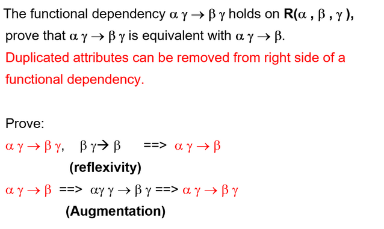
函数依赖，右边的公共属性可以去掉，使得函数双方没有交集。
Closure of Attribute Sets
属性集合也有闭包的定义
属性集合的闭包：Given a set of attributes \(a\), define the closure of a under \(F\) (denoted by \(a+\)) as the set of attributes that are functionally determined by \(a\) under \(F\)
属性集合的闭包也就是所有能被该属性集合所决定的属性的集合
给出一个给定函数依赖 F 后，计算某一属性的属性闭包的算法
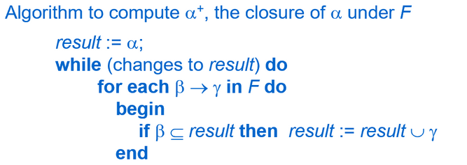
Example
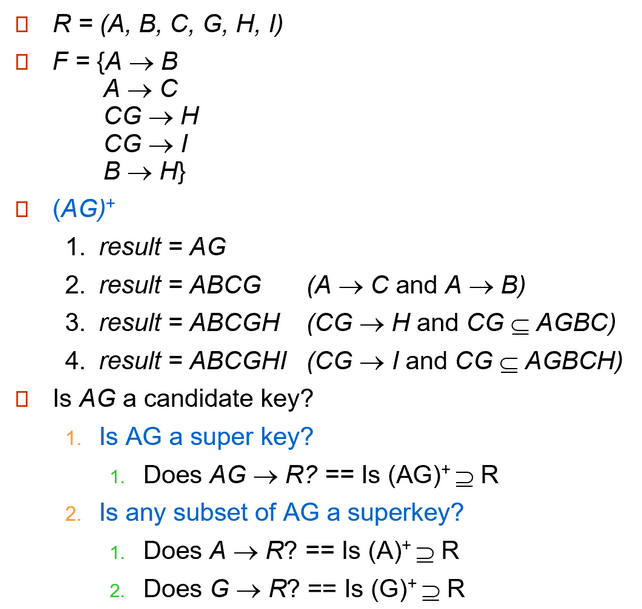
通过遍历有向图方式来寻找属性闭包
寻找属性闭包可以通过构建和遍历有向图的方式来进行，这使得整个过程更加直观和系统化（在考试中会比较好用）
- R = {A, B, C, D, E, F, G, H, I}
- F = {A → B, A → C, B → H, C → G, CG → H, CG → I}
graph LR
A((A)) --> B((B))
A --> C((C))
B --> H((H))
subgraph CG
C((C))
G((G))
end
CG --> H((H))
CG --> I((I))例如寻找 AG 的闭包只需找到从 A 或 G 出发能够联通到的所有节点
Uses of Attribute Closure
属性集闭包存在许多用途
- Testing for superkey: To test if \(\alpha\) is a superkey, we compute \(\alpha+\), and check if \(\alpha+\) contains all attributes of \(R\).
- Testing functional dependencies
- To check if a functional dependency \(\alpha\rightarrow \beta\) holds (or, in other words, is in \(F+\)), just check if \(\beta\subseteq\alpha+\).
- That is, we compute \(\alpha+\) by using attribute closure, and then check if it contains \(\beta\).
- Is a simple and cheap test, and very useful
- Computing closure of F: For each \(\gamma\subseteq R\), we find the closure \(\gamma+\), and for each \(S \subseteq \gamma+\), we output a functional dependency \(\gamma\rightarrow S\).
Example of Computing closure of F
给出一个对上文部分e.g.完整的计算： "e.g. \(F=\{A\rightarrow B,B\rightarrow C\}\) then \(F^+=\{A\rightarrow B, B\rightarrow C, A\rightarrow C, AB\rightarrow B, AB\rightarrow C,\ldots\}\)"
- 计算属性集所有子集的闭包
- 再遍历属性集中的每个子集，每个子集都可以决定其对应属性集的闭包中的任何子集，依次列出所有的函数依赖
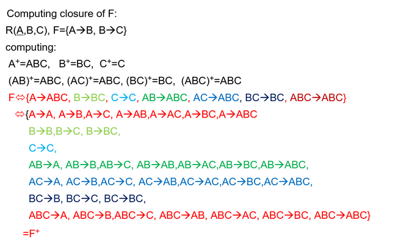
Canonical Cover（正则覆盖）
正则覆盖是最简单的形式，不存在冗余的函数依赖。
a canonical cover of F is a "minimal" set of functional dependencies equivalent to F, having no redundant dependencies or redundant parts of dependencies.
Example
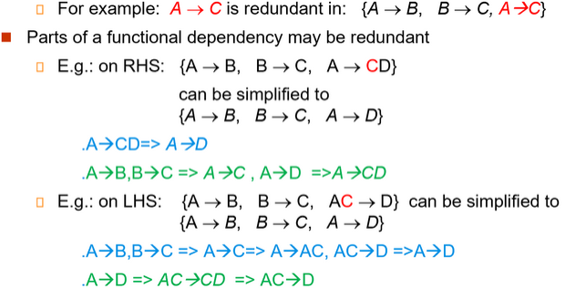
严格的定义：
A canonical cover for \(F\) is a set of dependencies Fc such that
- \(F\) logically implies all dependencies in \(F_c\)
- \(F_c\) logically implies all dependencies in \(F\)
- No functional dependency in \(F_c\) contains an extraneous attribute
- Each left side of functional dependency in \(F_c\) is unique.
正则覆盖可以理解为是消去了无关元素的函数依赖集。计算方法是从 \(F\) 使用合并的方式来替换掉所有的依赖，接下来依次删除所有的无关元素。
具体算法可以参考下面的链接：正则覆盖的计算
Example1: Computing a Canonical Cover
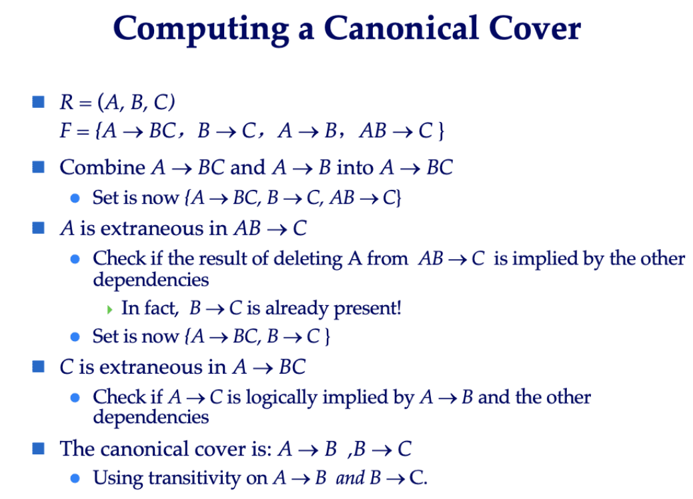
Example2: Computing a Canonical Cover
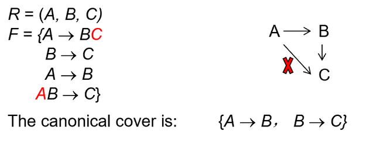
Exercise
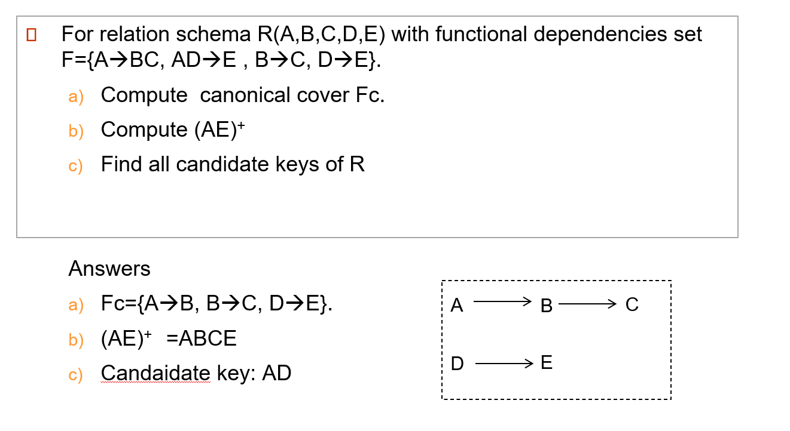
Boyce-Codd Normal Form
A relation schema \(R\) is in BCNF with respect to a set \(F\) of functional dependencies if for all functional dependencies in \(F^+\) of the form where \(\alpha \subseteq R\) and \(\beta \subseteq R\), at least one of the following holds
- \(\alpha \rightarrow \beta\) is trivial
- \(\alpha\) is a superkey for \(R\).
直白一点的定义即是：该关系模式所蕴含的任何一条非平凡的函数依赖的左边都是 key.
这里说的 key 其实就是关系模式定义的主键
Decomposing a Schema into BCNF
对于不是 key 的函数依赖，就把它分解出来作为单独的关系模式。
Suppose we have a schema \(R\) and a non-trivial dependency \(\alpha\rightarrow \beta\) causes a violation of BCNF. We decompose \(R\) into:
\((\alpha \cup \beta)\) and \((R-(\beta-\alpha))\)
\(\alpha\) 作为两个关系模式的公共属性，也是一个关系的 key, 这样才是无损分解。
Example
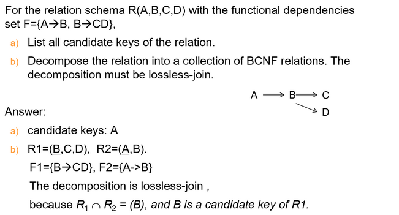
Dependency Preservation
依赖保持：原来的函数依赖，都可以在分解后的函数依赖中得到单独检验。否则需要把几个关系连接在一起才能检验依赖的，称为依赖不保持。
Constraints, including functional dependencies, are costly to check in practice unless they pertain to only one relation.
If it is sufficient to test only those dependencies on each individual relation of a decomposition in order to ensure that all functional dependencies hold, then that decomposition is dependency preserving ( 依赖保持 ).
（如果通过检验单一关系上的函数依赖，就能确保所有的函数依赖成立，那么这样的分解是依赖保持的）
（或者，原来关系 R 上的每一个函数依赖，都可以在分解后的单一关系上得到检验或者推导得到
- A decomposition is dependency preserving, if \((F_1\cup F_2 \cup \ldots \cup F_n )^+ = F^+\)
- If it is not, then checking updates for violation of functional dependencies may require computing joins, which is expensive.
其实感觉最简单来理解，就是看分解后的关系模式是否损失了对原有函数依赖的表达
Example
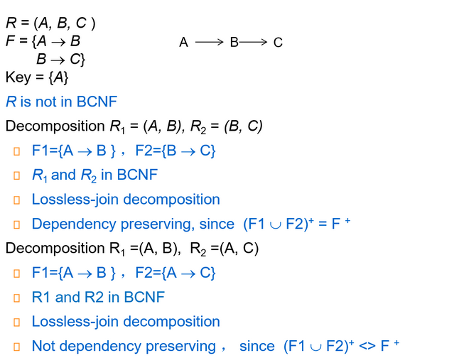
Exercise
分解 BCNF 的算法从不同函数依赖开始会得到不同的结果，并且并不一定能保证分解后的关系模式是依赖保持的
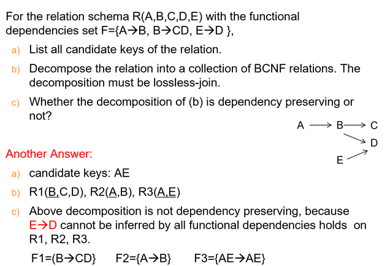
这里如果忘记了可以听 sjl 老师的智云，讲解的非常清晰
Because it is not always possible to achieve both BCNF and dependency preservation, we consider a weaker normal form, known as third normal form.
Third Normal Form
任何一个非平凡函数依赖，如果左边不是 key, 那么右边必须是 key 的一部分。
A relation schema \(R\) is in third normal form (3NF) if for all: \(\alpha \rightarrow \beta\) in \(F^+\) at least one of the following holds:
- \(\alpha\rightarrow \beta\) is trivial (i.e., \(\beta \in \alpha\))
- \(\alpha\) is a superkey for R
- Each attribute A in \(\beta-\alpha\) is contained in a candidate key for \(R\).
候选码有很多个，包含在某一个候选码即可。
Example
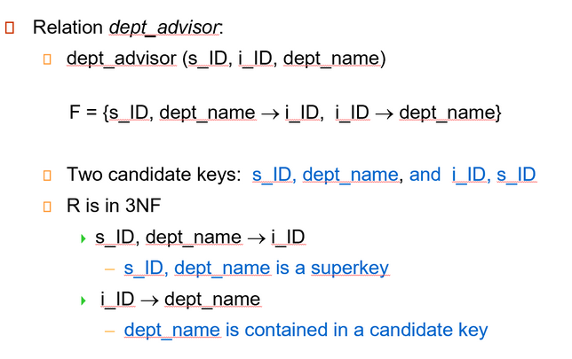
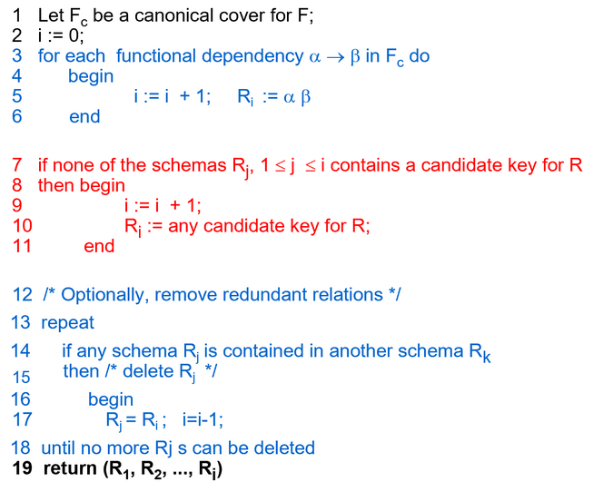
Goals of Normalization
In the case that a relation scheme R is not in "good" form, decompose it into a set of relation scheme \(\{R_1, R_2, \ldots, R_n\}\) such that
- each relation scheme is in good form (i.e., BCNF or 3NF)
- the decomposition is a lossless-join decomposition
- Preferably, the decomposition should be dependency preserving
Comparison between BCNF and 3NF
- It is always possible to decompose a relation into a set of relations that are in 3NF such that:
- the decomposition is lossless
- the dependencies are preserved
- It is always possible to decompose a relation into a set of relations that are in BCNF such that:
- the decomposition is lossless
- it may not be possible to preserve dependencies
E-R Modeling and Normal Forms


这里的无损分解，先指定一个路径，考虑每两个关系直接是否无损（公共属性是否为其中一个关系的 key
Multivalued Dependencies
There are database schemas in BCNF that do not seem to be sufficiently normalized.
可以参考 wiki 百科对的定义和解释：4NF
四范式：不存在非平凡的多值依赖。
A relation schema \(R\) is in 4NF with respect to a set \(D\) of functional and multivalued dependencies if for all multivalued dependencies in \(D^+\) of the form \(\alpha\rightarrow \rightarrow \beta\), where \(\alpha\subset R\) and \(\beta\subset R\), at least one of the following hold:
- \(\alpha\rightarrow \rightarrow \beta\) is trivial (i.e., \(\beta \subset \alpha\) or \(\alpha \cup \beta= R\))
即除了 \(\alpha,\beta\) 为没有其他属性。 - \(\alpha\) is a superkey for schema \(R\)
也就是说，4NF 的要求是：任何一个多值依赖，要么左边就是个 key, 要么这个依赖是平凡的。
可以把函数依赖理解为特殊的多值依赖，那么可见 4NF 是 BCNF 的超集
平凡的多值依赖
平凡的多值依赖是指：\(\alpha \rightarrow \rightarrow \beta\)，其中 \(\beta\) 是 \(\alpha\) 的子集，或者 \(\alpha \cup \beta = R\)。
也就是说，除了 \(\alpha,\beta\) 为没有其他属性。
这种多值依赖是平凡的，因为它们不引入任何新的信息。
分解算法大致如下：
-
识别非平凡多值依赖（MVD）
检查关系中是否存在形如 \(X \rightarrow\rightarrow Y\) 的依赖，其中：
- \(X\) 不是超键。
- \(Y\) 和 \(Z=R-X-Y\) 均非空，且 \(Y \cup Z \neq R-X\)。
-
基于 MVD 分解关系
对于每个非平凡 MVD \(X \rightarrow\rightarrow Y\)，将原关系 \(R\) 分解为两个子关系：
- \(R_1(X \cup Y)\)
- \(R_2(X \cup Z)\)，其中 \(Z=R-X-Y\)。
-
递归验证子关系
对每个子关系 \(R_1\) 和 \(R_2\)，重复步骤 1-2，直到所有子关系均满足 4NF。
Example


Overall Database Design Process
Denormalization for Performance
Some aspects of database design are not caught by normalization.
有时候我们需要引入冗余，来保持性能。
Example